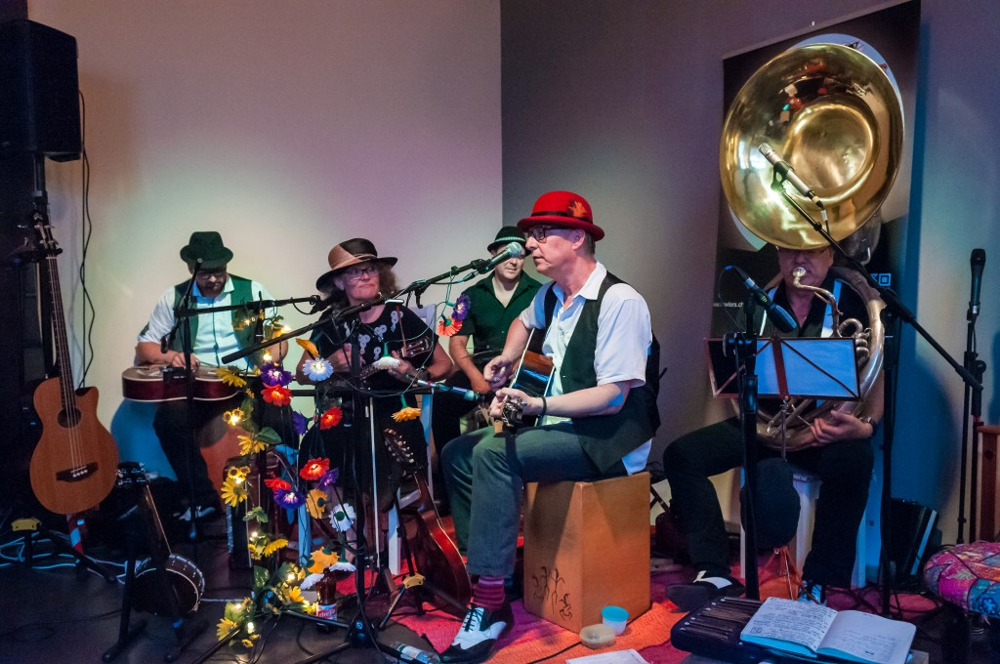

Von den Sümpfen am Mississippi über New Orleans und New York der 20-er Jahre bis nach Frankreich in die 50-er bis 80-er reicht das musikalische Repertoire der B&W Chocolate Howlers. Blues, Ragtime, Swing, Chanson und weitere erlesene Perlen neuerer Zeit servieren die B&W Chocolate Howlers, von zuckersüss bis bitterzart.
Die B&W Chocolate Howlers präsentieren sich nicht nur durch die Vielseitigkeit der Musikstile, den abwechslungsreichen Vortragsarten der Sänger sowie der Instrumentalnummern, sondern vor allem durch ihre Ehrlichkeit und Liebe zur handgemachten Musik.
Wir spielen regelmässig, in Kultur-Kaffées, in Beizen oder Privat und können mittlerweile auf über 150 Konzerte zurückblicken.
Wir hatten auch das Vergnügen und die Ehre von Januar 2013 bis Dezember 2018 Gastgeber der monatlichen Acoustic Blues Jam Sessions in der B&B Bar in Effretikon zu sein.
